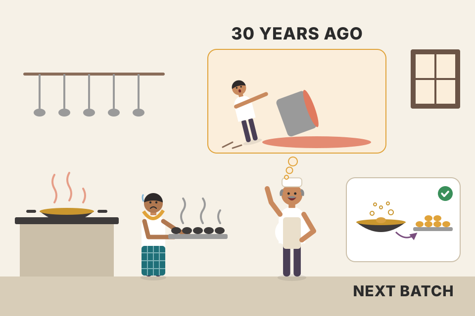
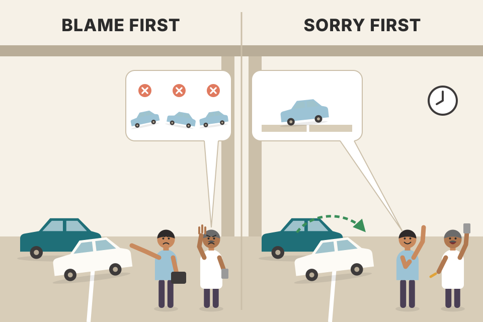
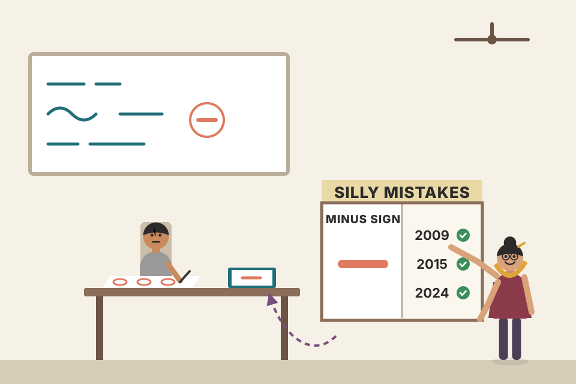
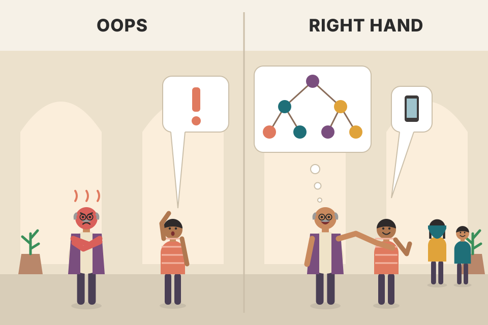
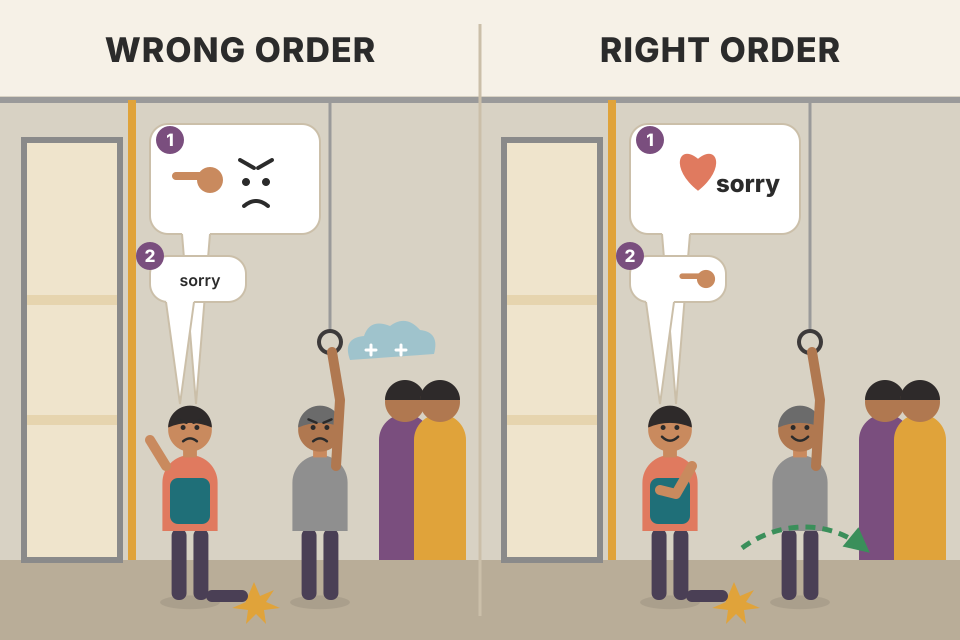
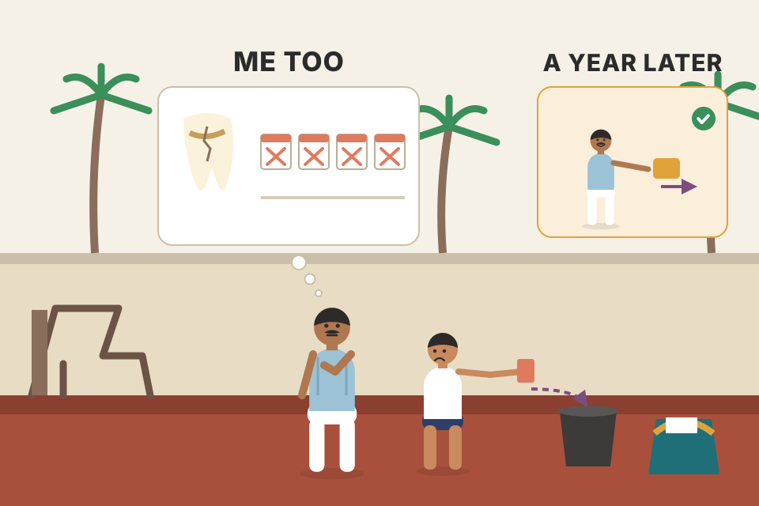
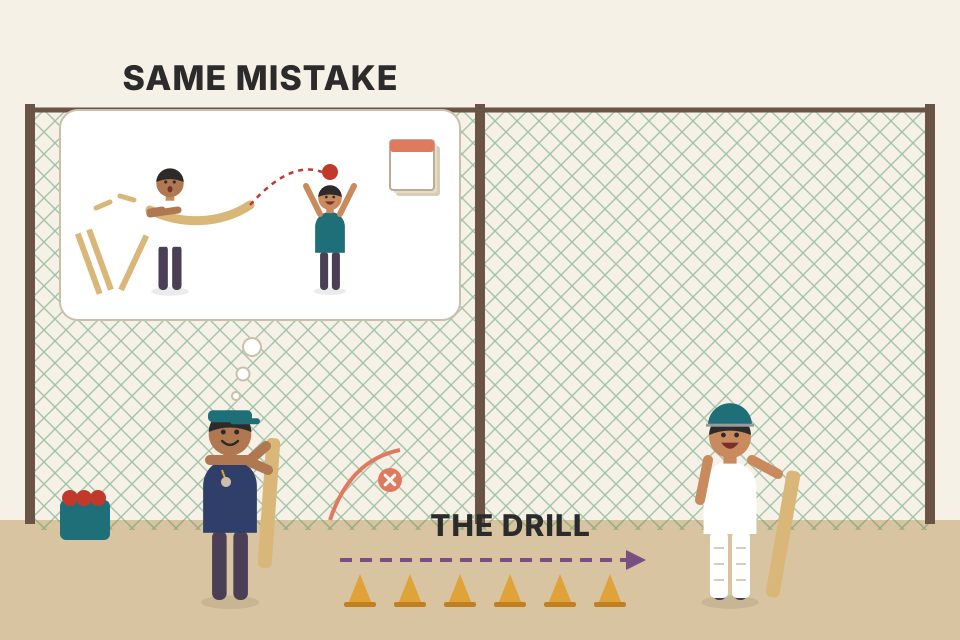

DALE CARNEGIE · HOW TO WIN FRIENDS · PART FOUR · CHAPTER 3 · PDF p208–212
Talk About Your Own Mistakes First
Before you point out someone's mistake, admit one of yours. A correction from someone who owns up to their own slips feels like help, not an attack.
This is one of the shortest chapters in the book, and one of the most usable. Carnegie catches himself about to scold his nineteen-year-old niece and realises he made far worse blunders at her age, so he changes how he opens every correction. An engineer in Canada cuts his secretary's spelling mistakes by showing her his own little book of words he can never spell. A German chancellor nearly loses his job by implying the Kaiser is a fool, and rescues it only by praising the Kaiser and running himself down, a move Carnegie says should have come first. A father stops his son from smoking without one warning, simply by admitting how badly he himself was hooked. The common thread: humility from the person giving the correction lowers the other person's defences, and you do not even need to have fixed your own fault for it to work.
Principle 3 of Part Four
Talk about your own mistakes before criticizing the other person.
How the chapter fits together
pdf p208–212 · read this first
Where it sits. This is the third chapter of Part Four, "Be a Leader: How to Change People Without Giving Offense or Arousing Resentment". Part Four is the book's answer to a problem left open in Ch.1: if criticism makes people defensive, how does a leader ever correct anyone? The first two answers came just before this: begin with praise and honest appreciation (Ch.22) and call attention to people's mistakes indirectly (Ch.23). This chapter adds a third way of softening the blow: put your own mistakes on the table first. Next comes ask questions instead of giving direct orders (Ch.25), and Part Four runs to nine principles in all, ending at Ch.30.
The argument as a chain. Each row reacts to the one before it.
Problema correction lands as "I am above you"→the other person defends instead of listening
Self-checkCarnegie, about to scold Josephine→"what was I doing at nineteen?"→she is doing better than I did
Why it worksfaults are easier to hear→from a critic who admits he is far from perfect
ProofDillistone's spelling bookvon Bülow and the KaiserZerhusen and the cigarettes
Order mattersvon Bülow: criticism → explosion → praise + self-humbling→it worked, but should have come first
Stretchyou need not have fixed your own fault→Zerhusen, still smoking, still persuades
Principletalk about your own mistakes before criticizing the other person
Limitsthe correction is still made→humility must be true, not a script
The chapter has no sub-headings. The plates below follow its four stories in order, with the two short lessons Carnegie draws between them. pdf p212 is a blank page before Chapter 4.
01 · THE OPENING STORY
Josephine, and the question Carnegie asked himself: "What was I doing at nineteen?"
pdf p208
Carnegie opens with himself, and with a moment he almost got wrong. The story is less about the niece than about the check he ran in his own head before speaking.
Josephine Carnegiehis niece, age 19New Yorkout of high school 3 yearswork experience: barely above zero
The situation. Josephine came to New York to work as Carnegie's secretary. She had left high school three years earlier and had almost no business experience. She would later become, in his words, one of the most skilled secretaries anywhere, but at the start she had plenty of room to improve.
The moment. One day he began to criticize her, then stopped himself mid-thought and argued with himself. He was twice her age. He had vastly more business experience (he says ten thousand times more). It was unfair to expect a beginner to see, judge and act on things the way he did (and he adds, poking fun at himself, that his own judgment was nothing special). And what had he been doing at nineteen? He made himself remember his own foolish mistakes and blunders from that age, one after another.
The honest verdict. Thinking it over as fairly as he could, he decided that Josephine's record at nineteen was better than his own had been. Then he adds a self-mocking twist: given how bad his record was, that was not much of a compliment to her.
What he changed. From then on, whenever he needed to point out one of her mistakes, he opened in a set way. In outline:
Name the mistake plainly. He did not hide it: yes, you made a mistake.
Put it next to his own. It was no worse than many he had made.
Explain it kindly. Nobody is born with judgment; it only comes with experience, and she was already ahead of where he was at her age.
Say why he is in no position to scold. He had done so many silly things himself that he had little appetite for criticizing her or anyone.
Then make the correction as a question. Wouldn't it have been wiser to do it this other way?
Notice what did not change. Josephine still heard exactly what she had got wrong and what to do instead. Carnegie did not drop the correction; he changed the position he spoke from: beside her, not above her.
Dated wording. "One of the most proficient secretaries west of Suez" is an old British-empire phrase meaning "in the whole Western world". His "batting average" is a baseball image for a track record; an Indian reader might say "her strike rate was better than mine". The secretary who takes dictation is today's executive assistant, or simply a new hire on your team.
Picture it

A senior chef at a Chennai mess sees the new nineteen-year-old helper burn a whole tray of vadas. He is about to shout, then remembers the day, thirty years ago, when he himself dropped an entire vessel of sambar on the floor before lunch rush. So he laughs and says, "At your age I wasted a full pot of sambar. Oil was too hot, that's all. Next batch, drop one first and watch the bubbles." The boy fries the next tray perfectly and is not afraid to ask the chef questions next time.
Where it breaks: the chef has a real, matching story. If you invent a mistake you never made, or pick one that is obviously tiny next to theirs, the trick turns into a performance and people feel it.
What's happening behind it
The book's explanation: Carnegie's change starts inside his own head. Remembering his own blunders made him see that Josephine's mistakes were normal for her age and experience, so the urge to scold faded before he spoke. Then, when he did correct her, opening with his own faults told her she was not being judged as a lesser person, only helped to do better.
Beyond the book: psychologists call the trap Carnegie avoided the curse of knowledge: once you know something, it is hard to imagine not knowing it, so the expert forgets how hard the beginner's task is. Remembering yourself as a beginner is one of the few reliable ways to undo it. (Chip and Dan Heath popularised the term in Made to Stick.)
At work
A new graduate on your team writes a database query inside a loop and the page takes nine seconds to load. Before writing the review comment, run Carnegie's check: you are a decade and many production incidents ahead of them. You learned about the "N+1 query" problem the hard way, probably by shipping it. So say that: "Classic one; I shipped exactly this in my first year and took down a dashboard. If we fetch all the rows in one query before the loop, it should drop to under a second. Want to try it?"
Interview angle. "Tell me about a time you mentored a junior engineer." A strong answer shows you remembered what it was like to be new: you shared a matching mistake of your own, made the correction specific, and let them make the fix. Avoid stories where the junior is simply the person who kept getting things wrong.
Worked example: correcting a new hire's email to a client
From above
"You can't send a client an email like this. It's too casual and there are three typos. Please be more careful."
True, and useless. They feel small, they will reread every email in fear, and they will stop showing you drafts.
Carnegie's way
"Good start on the content. I'll be honest, my first client emails were much worse; I once sent one with the wrong client's name in it. Two things I learned: a slightly more formal opening, and reading it out loud once catches the typos. Shall we fix this one together?"
Same corrections (tone, typos), offered from beside them. They keep showing you drafts, which is how they get better.
Why faults are easier to hear from a critic who admits his own
pdf p208
Between the first and second stories Carnegie states the whole chapter in a single sentence. Put simply: hearing a list of your own faults is far less painful when the person giving it starts by humbly admitting that they, too, are far from perfect.
Unpacked, that sentence has three parts:
The listing still happens. The faults are still recited. This is a principle about opening a correction, not about avoiding one.
The critic goes first. The admission comes before the criticism, not after it (the von Bülow story in plates 4 and 5 shows what happens when the order is reversed).
Humbly. It has to be a real admission, said with some honesty, not a ritual phrase before the real attack.
Picture it

Two neighbours in a Pune housing society share a parking spot. One morning A finds B's car blocking his. If A opens with "You've blocked me again!", B starts listing the times A parked badly. If A opens with "I know I left mine across the line last week, sorry about that. Could you leave me a little room in the mornings? I leave at 8," B laughs, apologises and moves the car.
Where it breaks: the admission only helps if it is true and roughly of the same kind. Saying sorry for something trivial while the other person caused real harm can sound like you are mocking them.
What's happening behind it
The book's explanation: throughout the book Carnegie's model is that criticism wounds pride and the sense of importance (Ch.1). When the critic admits a flaw first, the correction no longer carries the hidden message "I am better than you". The listener's pride is not under attack, so they have nothing to defend.
Beyond the book: social psychologists describe a norm of reciprocity in self-disclosure: when one person reveals something vulnerable, the other tends to open up in return (research going back to Sidney Jourard and Irwin Altman in the 1960s–70s). Amy Edmondson's work on psychological safety in teams finds the same pattern from the top: when leaders admit their own errors, team members report their mistakes more readily instead of hiding them.
At work
The easiest place to use this is code review, where every comment is a small correction. "Missing null check" reads as a verdict. "I always forget this one, which is why it's on my checklist: user can be null here when the session expires" reads as a colleague sharing a scar. Same fix, very different feeling, and the second one teaches the why.
Interview angle. "How do you give feedback to peers?" Mention that you often open with your own version of the mistake, because it keeps the conversation about the work, and that you still make the point clearly.
Rewrite it
Pick a blunt correction, think how you would open it with a mistake of your own, then reveal a Carnegie-style version and what changed.
E. G. Dillistone and the little black book of words he could never spell
pdf p208–209
The second story comes from one of Carnegie's course members, an engineer who used his own weakness as the teaching tool.
E. G. DillistoneengineerBrandon, Manitoba, Canada2–3 spelling errors per page
The situation. Dillistone had a new secretary. The letters he dictated came back to his desk for signing with two or three spelling mistakes on every page.
What didn't work. He had been pointing out the errors. That alone was not making her proofread more carefully or reach for the dictionary.
His own weakness. He admitted that, like many engineers, he was no great speller himself. For years he had kept a small black thumb-indexed notebook (one with A–Z tabs cut into the edge) listing the words that always tripped him up.
What he did. When the next letter with errors arrived, he sat down beside the typist. He said that one word somehow didn't look right to him, that it was one of the words he had always struggled with, and that this was the very reason he had started his own spelling book. He opened the book to the right page and found it. Then he explained why he now paid such attention to spelling: people judge us by our letters, and misspellings make us look less professional.
The result. He could not say whether she started a book of her own, but from that conversation on her spelling mistakes dropped significantly.
Why this one is clever. Dillistone's admission was not a speech about humility. It was a tool: the same book that proved he made mistakes also showed her a practical way to catch them. And notice the reason he gave. It was not "you are careless"; it was "people judge us by our letters". The problem became something they shared.
Dated setting. Dictated letters typed by a secretary have mostly gone. The modern version is a lead reviewing a junior's client email, release notes or design doc, and the "little black book" is a personal checklist, a snippets file or a linter config you share.
Picture it

A maths tuition teacher in Kota keeps a battered notebook titled "Silly mistakes I still make": sign errors, forgetting to carry a one, misreading the question. When a student keeps dropping minus signs, the teacher doesn't say "careless again". She opens her notebook, shows the student the minus-sign page with dates going back years, and says, "I still check this on every exam paper I set." The student starts a notebook of his own.
Where it breaks: a teacher admitting weakness in a basic skill can, in some settings, cost her authority with parents or students. Dillistone's admission worked partly because his real expertise (engineering) was not in question; the weakness he shared was beside it.
What's happening behind it
The book's explanation: pointing out the mistakes alone was simply a list of her failures, and it changed nothing. Admitting his own weakness first, then showing the method he used to manage it, turned the correction into shared know-how. The reason he gave (how letters reflect on us) appealed to something she could care about, not just to his displeasure.
Beyond the book: this is a neat example of modelling, which Albert Bandura's social learning research showed is one of the strongest ways people pick up a behaviour: seeing a respected person do it, imperfections included. Dillistone did not tell her to use a checklist; he showed her his.
At work
A teammate keeps forgetting to run database migrations in the right order. Instead of "you broke staging again", share your own scar and your own tool: "I did this so many times I wrote a pre-deploy checklist for myself; here it is, the migration-order line is number one." Even better, turn the checklist into a script or CI check, so neither of you has to remember. That is the engineering version of the black book.
Interview angle. "Tell me about a time you improved someone's work quality." Talk about sharing a personal method (checklist, template, tool) that came from your own mistakes, and about measuring the result (fewer review rounds, fewer incidents), the way Dillistone noticed the errors dropped.
Connects to
Making the fault seem easy to correct, with a concrete method: Part Four, Ch.8.
Appealing to what the other person cares about (looking professional) rather than what you want: Part One, Ch.3.
04 · THE BIG STORY
Prince von Bülow and Kaiser Wilhelm II: a chancellor who nearly lost everything with one sentence
pdf p209–211
The longest story in the chapter comes from imperial Germany. Carnegie uses it the other way round: a skilled diplomat who did the wrong thing first, and then rescued himself with a late version of the right one.
Germany · 1909 (as the book dates it)Prince Bernhard von Bülow, Imperial ChancellorKaiser Wilhelm IIthe Daily Telegraph interview
The people. Von Bülow was a polished, experienced statesman and the Kaiser's chancellor. Wilhelm II, the last German emperor, was (Carnegie lays it on thick) proud and arrogant, building up an army and navy he boasted could beat anyone.
The blunder. While a guest in England, the Kaiser made a string of boastful, tactless public remarks and personally approved their publication in the London Daily Telegraph. Among them: that he was the only German who felt friendly toward the English; that his growing navy was aimed at Japan, not England; that he alone had saved England from being humiliated by Russia and France; and that his own campaign plan had let the British commander Lord Roberts defeat the Boers in South Africa.
The uproar. Carnegie says no European monarch had said anything so astonishing in peacetime for a hundred years. The whole continent buzzed like an angry hornets' nest, England was outraged, and German statesmen were horrified.
The Kaiser's request. Panicking, the Kaiser asked von Bülow to take the blame publicly: to announce that he, the chancellor, had advised the Kaiser to say all of it.
The mistake. Von Bülow objected that nobody in Germany or England could possibly believe he had advised the Kaiser to say such things. The instant he said it, he knew it was a serious error, because it implied the remarks were so foolish that only the Kaiser could have come up with them. The Kaiser exploded:
"You consider me a donkey…"Wilhelm II to von Bülow, as quoted by Carnegie (pdf p210)
…accusing his chancellor of thinking him capable of blunders von Bülow himself would never make.
The rescue. Von Bülow knew he should have praised before he found fault. Too late for that, he did the next best thing: he praised after the criticism, and ran himself down at the same time. Respectfully, he said he meant nothing of the kind. The Kaiser was far ahead of him in many fields: naval and military knowledge, and above all natural science. He had often listened in admiration as the Kaiser explained the barometer, wireless telegraphy or X-rays ("Roentgen rays"). As for himself, he confessed, he knew next to nothing about physics or chemistry. What he brought to the partnership was some history and a bit of political, mainly diplomatic, skill.
The result. The Kaiser lit up. Von Bülow had praised him and humbled himself, and after that the Kaiser could forgive anything. He declared that the two of them completed each other perfectly and must stick together, shook von Bülow's hand again and again, and later that day announced, fists clenched, that he would punch anyone who said a word against Prince von Bülow.
Step through the story
Picture it

A joint family in Lucknow. The eldest uncle, at a relative's wedding, boasts loudly that he alone arranged the whole match and that the groom's family would have been nowhere without him. The groom's family is offended. Back home, the uncle asks his nephew to tell everyone it was the nephew's idea to say it. The nephew blurts out, "Nobody would believe I'd say something like that!" The uncle goes red. The nephew recovers: "Chachaji, you know these families and their history far better than I do; I can barely remember our own cousins' names. I'm just good at the phone calls." The uncle beams and tells everyone the nephew is his right hand.
Where it breaks: the nephew's rescue is praise for things the uncle really is good at. If the praise were obviously false, a proud man might feel mocked twice. Von Bülow's compliments, flattering as they were, pointed at the Kaiser's genuine hobbies.
What's happening behind it
The book's explanation: von Bülow's first reply, though true, told the Kaiser he was a fool. That wounded the Kaiser's pride at its most sensitive moment, so he struck back. The rescue worked because it did two things at once: it raised the Kaiser (praise for his knowledge) and lowered von Bülow (his own ignorance of science). With their relative standing restored, the Kaiser's pride no longer needed defending, and he could forgive.
Beyond the book: in modern terms the first reply was a face threat (Brown and Levinson's politeness theory): it attacked the Kaiser's public image. The repair combined a face-saving move for him with a self-effacing move for von Bülow. Note too that the praise was about a different area (science) from the actual fault (diplomacy), which is why it could be sincere without excusing the blunder.
At work
A senior stakeholder's off-the-cuff promise in a client meeting ("we'll have that feature in two weeks") goes badly, and they want you to tell the client it was the engineering team's estimate. Saying "nobody would believe we'd estimate something that unrealistic" is von Bülow's mistake: true, and a direct hit on their pride. A better path, done first rather than as a rescue: own your side ("I should have given you a clearer risk picture before the meeting"), credit what they are genuinely good at ("you know this client better than any of us"), then propose a plan together for resetting expectations honestly.
Interview angle. "Tell me about a time you disagreed with a senior leader." A strong answer shows you raised the disagreement without implying they were foolish, owned any part you had played, and kept the relationship. If you once made von Bülow's mistake and recovered, that is a good honest story too.
Making the other person feel important, sincerely: Part Two, Ch.6.
Letting a powerful person save face after a public blunder: Part Four, Ch.5.
05 · WHAT VON BÜLOW TEACHES
The ordering lesson: humble yourself first, not as a rescue afterwards
pdf p211
Carnegie draws two lessons from the Kaiser story, one about order and one about power.
Order. Von Bülow saved himself in time, but even this skilled diplomat made one error: he should have opened by talking about his own shortcomings and the Kaiser's superior qualities, instead of hinting that the Kaiser was a half-wit who needed a guardian. Praise after criticism is a repair; humility before criticism is prevention.
Power. If a few sentences of self-humbling and praise could turn a proud, insulted emperor into a loyal friend, imagine, says Carnegie, what humility and praise can do for ordinary people in everyday dealings. Used rightly (a word worth noticing: sincerely, not as flattery), they work what he calls real miracles in human relations.
Beyond the book: what history adds
Historians date the Kaiser's Daily Telegraph interview to late October 1908, not 1909 as the book puts it. And the reconciliation did not last: the affair badly damaged the Kaiser's trust in von Bülow, who had not stood up for him in the Reichstag debate that followed, and von Bülow left office in July 1909. None of this undoes Carnegie's point about the conversation itself, but it is a useful reminder that one well-handled moment repairs a conversation, not necessarily a relationship that is under strain for other reasons.
Picture it

A Mumbai local train at rush hour. You step on someone's foot as you squeeze in, and they glare. If you snap "You're standing in the doorway!" first and then add a hurried "sorry, sorry, my fault too", you get a cold ride to Dadar. If you start with "Sorry, my fault, this crowd is impossible," and then mention that the doorway is jammed, you get a nod and maybe a little room. Same words, opposite order, opposite result.
Where it breaks: a stranger on a train has no long relationship with you. With people you deal with daily, a repair after a slip can still work (von Bülow's did), so a wrong start is not a disaster; it is just more expensive.
What's happening behind it
The book's explanation: once the other person feels insulted, they hear everything afterwards through that hurt. Starting with your own faults and their strengths means the hurt never happens, so the point you make next is heard as information.
Beyond the book: psychologists call this a primacy effect: the first thing someone hears about you or your message strongly shapes how they interpret the rest (Solomon Asch's 1946 experiments with lists of personality traits are the classic demonstration). The opening sentence of a correction sets the frame; it is hard to change the frame afterwards.
At work
In a retro after a failed release, the lead who opens with "I'll start: I approved the release without checking the rollback plan" sets a frame in which everyone else can admit their part. The lead who opens with "Let's find out what went wrong with the QA process" has implied whose fault it was, and then has to spend the meeting repairing that, the way von Bülow did. Same people, same facts, a very different meeting.
Interview angle. "How do you run a blameless post-mortem?" Say you start with your own contribution to the failure, because the first thing said in the room shows everyone how safe it is to be honest.
Which opening?
Pick a response to see how Carnegie would judge it.
Sincere praise vs flattery, the line that "rightly used" depends on: Part One, Ch.2.
06 · EVEN BEFORE YOU'VE FIXED IT
Clarence Zerhusen, his fifteen-year-old son, and the cigarettes
pdf p211
The last story stretches the principle. Carnegie points out that admitting your own mistakes can help persuade someone to change even if you have not yet corrected those mistakes yourself. You do not have to be a finished example to use this.
Clarence ZerhusenTimonium, Marylandson David, age 15both parents smoked
The situation. Zerhusen found out that his fifteen-year-old son David was experimenting with cigarettes. He did not want his son to smoke, but there was an obvious problem: he and David's mother both smoked, so they had been setting a bad example all along.
What he did. He told David how he himself had started smoking at about David's age, how he got addicted, and how he still could not give it up. He reminded David of his own irritating cough, and of how David, only a few years earlier, had kept begging him to give up cigarettes.
What he did not do. He did not urge him to stop, make threats, or lecture him about the health dangers. He only described how he was hooked and what that had meant for him.
The result. David thought it over and decided not to smoke until he had finished high school. In the years that followed he never took up smoking and had no intention of ever doing so.
The second result. The conversation changed the father too. Because of it, Zerhusen decided to quit smoking himself, and with his family's support he succeeded.
Why this story is here. A father who still smokes telling his son not to smoke sounds like the classic hypocrite: "do as I say, not as I do". Zerhusen avoided that trap by not saying "don't" at all. He did not pretend to be a model; he offered himself as a warning, honestly. The son could see the cost without being told what to do, and the decision was his own.
Dated setting. The cigarette story is from the 1970s–80s. Today it might be vaping, gaming until dawn, or doom-scrolling. The shape is the same: a parent who still struggles with the habit admits it honestly instead of preaching.
Picture it

A father in Kochi catches his son, fourteen, with a packet of gutka in his school bag. He chews paan masala himself and his teeth show it. Instead of shouting, he sits the boy down: "I started at your age because my friends did. Now look at my teeth, and the dentist says my gums are going. I've tried to stop four times. I'm not going to forbid you; I just don't want you to have what I have." The boy throws the packet away himself, and a year later the father gives up the habit too.
Where it breaks: honest confession does not always work. Addictive habits, peer pressure and a teenager's sense of being invincible are strong; Zerhusen's story had a happy ending, but a parent may also need to set firm rules. The confession is a strong opening, not a guarantee.
What's happening behind it
The book's explanation: Zerhusen admitted his fault instead of hiding it, and never used threats or warnings. That left nothing for David to rebel against, and the father's own experience made the cost real. Carnegie's broader point is that the confession works even though Zerhusen had not yet fixed the problem.
Beyond the book: two research ideas fit. Reactance (Jack Brehm, 1966): when people feel their freedom is threatened by an order, they are motivated to do the forbidden thing to restore it, which is why "don't smoke" can backfire with teenagers. And motivational interviewing (William Miller and Stephen Rollnick), widely used in addiction counselling, avoids lecturing for the same reason and helps the person reach their own decision. There is also research on the "hypocrisy effect" (Elliot Aronson): people who are reminded of their own failures to live up to a value are more likely to change their behaviour, which may explain why the conversation changed the father too.
At work
You want your team to stop working weekends to hit deadlines, but you have been answering Slack on Sundays yourself. Don't issue a rule you visibly break. Say it straight: "I've been bad at this; I answer messages on Sundays and I know it signals you should too. I'm stopping, and I'd like you to as well." Like Zerhusen, the admission makes the request believable, and saying it out loud may be what makes you change.
Interview angle. "Tell me about a time you influenced someone without authority." A story where you admitted your own weakness honestly and the other person reached their own decision is often more convincing than one where you simply argued better.
Reflect, then reveal
Think of a habit you want someone close to you to change (a teammate, a sibling, a child, a friend) that you also have, or used to have. Write a few lines on how you would bring it up.
Connects to
Letting the other person feel the decision is theirs: Part Three, Ch.7.
Principle 3: talk about your own mistakes before criticizing the other person
pdf p211–212
Carnegie closes in one line: this is a principle that a good leader follows. (Part Four is addressed to leaders throughout: anyone who has to change other people's behaviour, whether a manager, a parent, a teacher or a senior colleague.)
Principle 3 of Part Four
Talk about your own mistakes before criticizing the other person.
pdf p212 is blank; Chapter 4 starts on pdf p213.
Putting the four stories together, the principle has a clear shape:
Story
The admission
The correction that followed
Outcome
Carnegie and Josephine
"I made worse blunders at your age; judgment comes with experience."
"Wouldn't it have been wiser to do it this way?"
She became a highly skilled secretary.
Dillistone
"I can't spell this word either; here's my book."
Spelling matters because people judge us by our letters.
Errors dropped significantly.
Von Bülow
"I know nothing of science; you surpass me." (said too late)
Implied: the remarks were the Kaiser's, not his.
Forgiven, but Carnegie says the order was wrong.
Zerhusen
"I started at your age and I'm hooked."
None spoken; no order, threat or warning.
Son never smoked; father later quit.
A working recipe (our summary of the chapter's moves, not a list in the book):
Check yourself first, privately. Before speaking, ask Carnegie's question: what was I like at their stage, with their experience? This alone often shrinks the urge to scold.
Pick a true, matching mistake. One of yours of the same kind (Dillistone's spelling, Zerhusen's smoking). Real beats dramatic.
Say it first. Before the correction, not as a rescue afterwards (von Bülow).
Keep it short. One or two sentences; the conversation is still about their work, not your memoirs.
Then make the point clearly, ideally as a question or a shared method (Carnegie's "wouldn't it be wiser…", Dillistone's book).
Leave them the decision where you can (David's own rule).
Picture it

A cricket coach at a district academy in Nagpur watches a teenage batsman keep getting out playing across the line. Before giving the correction, he says, "I got out like this so often that my coach called me 'square leg's best friend'. Took me a whole season to fix." Then he shows the drill. The boy laughs, relaxes, and listens to every word of the drill that follows.
Where it breaks: the coach's story only lands because he clearly did fix it, which also gives hope. The principle still works without that (Zerhusen), but a confession that ends in "and I'm still hopeless" needs care not to sound like "so don't bother".
What's happening behind it
The book's explanation: across all four stories, the admission removes the feeling that the critic is standing above the other person. With pride safe, the correction can be heard, and in the best cases (Zerhusen) the person corrects themselves.
Beyond the book: research on leader humility (for example Bradley Owens and David Hekman's studies of "humble leadership", 2012–2016) finds that leaders who admit mistakes and limits, while still holding high standards, tend to have more engaged, more learning-oriented teams. The same studies warn that humility without competence does not help, which is why Carnegie's people all still make the correction.
At work
Where it fits naturally: code review ("I've shipped this bug myself"), 1:1s about performance ("I struggled with this in my first lead role"), post-mortems (go first with your own part), mentoring new hires, and pushing back on stakeholders ("I should have flagged this risk earlier"). Where to be careful: in a formal performance warning or a safety or compliance issue, a short admission can still help the tone, but it must not blur the message that the standard is not optional.
Interview angle. Behavioural interviews reward exactly this shape. "Tell me about a time you gave difficult feedback" → name the issue, say how you opened by sharing your own version of the mistake, how you made the correction concrete, and what changed. Interviewers also listen for whether you can name your own mistakes without being asked; that is this principle applied to yourself.
Admitting you are wrong when you are the one being corrected: Part Three, Ch.3.
08 · WRAP-UP
Summary and key terms
pdf p208–212
Check yourself before you correct. About to scold his 19-year-old niece Josephine, Carnegie remembered he was twice her age with vastly more experience, and that his own blunders at nineteen were worse than hers. From then on he opened every correction by admitting his own mistakes, explaining that judgment comes with experience, and only then asking whether another way would have been wiser.
The core claim. A list of your faults is much easier to hear when the critic starts by humbly admitting that they are far from perfect too.
Dillistone's spelling book. Pointing out his secretary's 2–3 errors a page did nothing; showing her the black thumb-indexed book of words he himself could never spell, and explaining that people judge us by our letters, cut her errors significantly.
Von Bülow and the Kaiser. Asked to take the blame for the Kaiser's Daily Telegraph boasts, von Bülow implied only the Kaiser could have said such things, and the Kaiser exploded ("you consider me a donkey"). Praising the Kaiser's science and admitting his own ignorance turned him into a loyal friend, but it was only the next best thing: he should have opened with his own shortcomings.
Humility plus praise, rightly used, can work what Carnegie calls miracles in everyday relationships.
You need not have fixed your fault. Zerhusen, still a smoker, simply told his 15-year-old son how he got hooked at that age, with no threats or warnings. David never smoked, and the father later quit too.
Principle 3 of Part Four: Talk about your own mistakes before criticizing the other person. The correction still gets made.
Term or phrase
Meaning on this page
Where
Principle 3 (Part Four)
Talk about your own mistakes before criticizing the other person.
pdf p211
"What was I doing at nineteen?"
Carnegie's private self-check: remember yourself at the other person's stage before judging them.
pdf p208
Judgment comes with experience
Nobody is born with it; a beginner's mistakes are normal, not a character flaw.
pdf p208
The humble critic
Faults are easier to hear from someone who admits they are far from perfect.
pdf p208
The little black book
Dillistone's thumb-indexed list of words he couldn't spell: an admission that doubles as a tool.
pdf p209
Praise after criticism
Von Bülow's repair: it worked, but it is second best to humility first.
pdf p210–211
Humbling oneself and praising the other
The two-part move that turned the insulted Kaiser into a friend.
pdf p210–211
Admitting an uncorrected fault
Owning a mistake you still make can persuade others (Zerhusen).
pdf p211
09 · USE IT
Practice this week
beyond the book
Small exercises, each with a way to tell whether it worked. The exercises are ours; the ideas are the chapter's.
The nineteen check. Before each correction this week, take ten seconds to recall one mistake you made at the other person's stage. Worked if: at least once, you decide the issue is smaller than it first looked, or you soften your opening without dropping the point.
Build your black book. Write down five mistakes you have made repeatedly in your work (a bug pattern, a planning error, a communication slip). Worked if: the next time you see someone make one of them, you have a true story ready.
One review comment a day, own mistake first. In code review, rewrite one comment per day to open with "I've done this too" (only where true). Worked if: fewer replies argue with the comment, and the author fixes it without a second round.
Go first in the retro. At your next retro or incident review, be the first person to name your own part. Worked if: others name theirs without being asked.
The Zerhusen talk. Pick one habit you want someone close to you to change that you also have. Tell them honestly about yours, with no "you should". Worked if: they bring up the subject themselves later, or you find yourself changing too.
Order check. Reread three feedback messages you sent this month. Was the admission (if any) before or after the criticism? Worked if: you can spot one von Bülow ordering and rewrite it.
10 · LIMITS
Where it can go wrong
pdf p208–211 · plus beyond the book
The book's own caveats first.
The correction is still made. Carnegie still told Josephine she had made a mistake and what would have been wiser; Dillistone still pointed out the word. The admission opens the correction; it does not replace it.
Order matters. Humility after an insult is only the "next best thing" (von Bülow). It can rescue you, but it is not the method.
"Rightfully used." Carnegie qualifies his miracle claim: humility and praise work when used rightly, which elsewhere in the book means sincerely (see Ch.2 on flattery).
Honesty is the base. Carnegie's admission to Josephine came after he thought it over "honestly and impartially" and concluded she really was doing better than he had. The principle rests on a true comparison, not a polite one.
Beyond the book: our critique
Fake humility backfires. An invented or trivial "mistake" used as a softener before a harsh criticism is quickly recognised as a technique. People then distrust the next admission too. Use only true stories.
Don't make it about you. A long confession hijacks the conversation and can leave the other person comforting you. One or two sentences, then back to their work.
Over-confessing can erode trust in your competence. If a lead admits basic errors in the very area the team relies on them for, people may worry. Admit real past mistakes and how you learned from them; that shows judgment, not weakness.
Some issues need a firm line. Harassment, safety breaches, data leaks, dishonesty. A matching confession may be impossible or inappropriate, and softening can blur the seriousness. Be humble in tone, firm in substance.
Culture and hierarchy. In many Indian workplaces, a senior openly owning a mistake can land very well, because it is rare and signals safety, especially in private 1:1s. In a very hierarchical setting, or in front of a client or a large group, it can occasionally be read as weakness; there, do it privately first. Juniors correcting seniors (the von Bülow position) need it most.
The stories are selected. The book reports only successes: Josephine, Dillistone's secretary, the Kaiser, David. Teenagers sometimes smoke despite the best conversation, and the Kaiser-von Bülow friendship broke down within a year (see plate 5). The principle improves your odds; it does not guarantee results.
Dated details. The stories feature male bosses and female secretaries, typical of the period. The principle is not tied to that; it works at least as well between peers and from juniors to seniors.
11 · TEST YOURSELF
Check yourself
pdf p208–211
Try to answer before opening each one. The first half is story recall; the second half is using the principle.
1. What stopped Carnegie from criticizing Josephine, and what did he conclude?
He asked himself what he could expect from someone half his age with almost no business experience, and what he himself had been doing at nineteen. Recalling his own blunders honestly, he decided her record at nineteen was better than his had been (adding, with a joke, that this was not much of a compliment).
2. Describe the steps of Carnegie's new way of opening a correction with Josephine.
He named the mistake; said it was no worse than many of his own; explained that judgment is not inborn but comes with experience, and that she was ahead of where he had been at her age; said his own silly mistakes left him little appetite for criticizing anyone; then asked whether it would have been wiser to do it another way.
3. State the chapter's core claim in one sentence.
It is much easier to listen to a list of your own faults if the person criticizing you begins by humbly admitting that they are far from perfect too.
4. What was Dillistone's problem, what had failed, and what did he do?
His new secretary's letters had two or three spelling mistakes per page. Simply pointing them out did not make her proofread. He sat with her, said one word didn't look right and was one he always struggled with, opened his own black thumb-indexed spelling book to find it, and explained that people judge us by our letters. Her errors dropped significantly.
5. What did the Kaiser say in the Daily Telegraph, and what did he then ask of von Bülow?
That he was the only German friendly to England, that his navy was against Japan, that he alone had saved England from Russia and France, and that his plan had let Lord Roberts beat the Boers. When Europe erupted, he asked von Bülow to say publicly that he had advised the Kaiser to say these things.
6. What was von Bülow's mistake, and how did he recover?
He protested that nobody would believe he could have advised such things, implying the Kaiser alone was foolish enough. The Kaiser exploded. He recovered by praising the Kaiser's naval, military and especially scientific knowledge (barometer, wireless, X-rays) and admitting his own ignorance of science, claiming only some history and diplomatic skill.
7. The Kaiser ended up delighted. Why does Carnegie still say von Bülow made an error?
Because praising after criticizing was only the next best thing. He should have begun with his own shortcomings and the Kaiser's superiority, not with a remark implying the Kaiser needed a guardian.
8. What did Zerhusen do and not do, and what happened?
He told David he started smoking at about David's age, was now hooked and could hardly stop, and reminded him of his cough and of how David used to beg him to quit. He made no threats, no exhortation and no warnings about danger. David decided not to smoke until after high school and never did; Zerhusen then quit himself with his family's help.
9. Which extension of the principle does the Zerhusen story show?
Admitting your own mistakes can help persuade someone even when you have not yet corrected those mistakes yourself.
10. Application: you are reviewing a junior's PR with an SQL query inside a loop. Write an opening that follows Principle 3.
Something like: "Classic one, I shipped exactly this N+1 pattern in my first year and took down a dashboard. If we fetch the rows in one query before the loop it should be much faster. Want to try it?" Own matching mistake first, then a specific correction, then an invitation.
11. Application: you already sent "This won't work, did you test it?" and the person is upset. What does the von Bülow story suggest now?
Do the next best thing: repair quickly with sincere credit for what they are genuinely good at and an honest admission of your own (perhaps that your message was careless, or that you've made the same error). Then return to the problem. Next time, put the admission first.
12. Application: your team keeps skipping documentation, and so do you. How would Zerhusen handle it?
Admit it openly: "I've been the worst at this; I skipped the docs on the last two services and it cost us a day in the incident." Describe the cost to you, skip the lecture, ask the team what would make docs easier, and actually start doing it yourself.
13. When could opening with your own mistake be the wrong move?
When the "mistake" would be invented or trivial next to theirs; when it would turn the talk into your story; when the issue is serious (safety, harassment, dishonesty) and needs a firm, clear line; or in some public or hierarchical settings where it is better done privately first.
14. Interview: "Tell me about a time you gave difficult feedback." How does this chapter shape the answer?
Describe the problem, then how you opened by sharing a real mistake of your own of the same kind, how you made the correction specific (perhaps with a tool or checklist you use, like Dillistone's book), how you let them own the fix, and the measurable result afterwards.
12 · SOURCES
References
pdf p208–212
Book pages and other sources used on this page
Dale Carnegie, How to Win Friends and Influence People, revised edition (1981; Simon & Schuster 2009 printing), Part Four, Chapter 3, "Talk About Your Own Mistakes First", pdf p208–212. Stories by page: Josephine Carnegie p208; the core claim p208; E. G. Dillistone p208–209; von Bülow and Wilhelm II p209–211; the ordering lesson and "veritable miracles" p211; Clarence Zerhusen p211; Principle 3 p211. pdf p212 is blank.
Beyond the book (named where used): C. and D. Heath, Made to Stick (curse of knowledge); S. Jourard and I. Altman on reciprocal self-disclosure; A. Edmondson on psychological safety in teams; A. Bandura on social learning and modelling; P. Brown and S. Levinson, Politeness (face threats); S. Asch (1946) on first impressions and primacy; J. Brehm (1966) on reactance; W. Miller and S. Rollnick, Motivational Interviewing; E. Aronson and colleagues on the hypocrisy effect; B. Owens and D. Hekman on humble leadership.
Historical note (Beyond the book): the Daily Telegraph affair (interview published October 1908) and von Bülow's resignation as Chancellor in July 1909.